Fasteners & Hardware
57 parts
1992 - 2001 Dodge Viper Inner Seat Belt Bolt - 06034457
Part # 6034457
$18.00

1992 - 2002 Dodge Viper Brake Hose to Caliper Bolt - 06503805
Part # 6503805
$5.00

1992 - 2002 Dodge Viper Brake Hose to Caliper Washer - 06502114
Part # 6502114
$6.00

1992 - 2002 Dodge Viper Fog Lamp Bracket - 05245172
Part # 05245172
$100.00
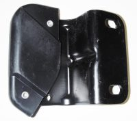
1992 - 2002 Dodge Viper Right Lower Hood Lateral Bracket - 04643874
Part # 4643874
$40.00
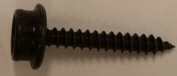
1992 - 2002 Dodge Viper Snap Head Screw - 6035085
$3.50

1992 - 2004 Dodge Viper Spark Plug Wire Separator Loom - 05245237AB
Part # 5245237AB
$19.95
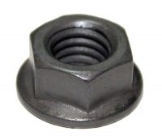
1992 - 2010 Dodge Viper Hex Flange Nut - J4003909
$2.00
 Out of stock
Out of stock1992 - 2010 Dodge Viper Hex Nut / Coned Washer M6 x 1.00 - 06101447
Part # 6101447
$5.00
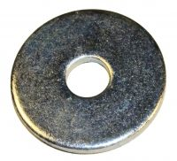
1992 - 2010 Dodge Viper M6 Flat Washer - 06100877
Part # 06100877
$1.00
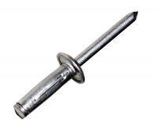
1992 - 2013 Dodge SRT Viper .25 Grip -.06 - .25 Rivet - 06034645
$7.00

1992 - 2013 Dodge Viper Splash Shield Retainer Screw - 04708180
Part # 4708180
$9.95

1992 - 2014 Dodge SRT Viper Hex Nut w/Sealing Washer M6 x 1.00 - 34201358
Part # 34201358
$6.00
 Out of stock
Out of stock1993 - 2006 Dodge Viper Fender Liner / Splash Shield Hood Pad Push Pin - 06501590
Part # 06501590
$3.50
 Out of stock
Out of stock1996 - 2002 Dodge Viper M4.8x1.59x13 Hex Head Tapping Screw - 06504580
Part # 6504580
$5.25
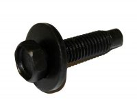
1996 - 2006 Dodge Viper Hex Head Nut & Washer (Qty 4) - 06503675
Part # 06503675
$16.00

1996 - 2008 Dodge Viper A/C Drier Line O-Ring - 05066637AA
Part # 05066637AA
$5.50
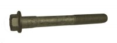
Out of stock1996 - 2010 Dodge Viper Shock Upper Mounting Bolt - 06504189
Part # 6504189
$9.00
 Out of stock
Out of stock1996 - 2015 Dodge Viper SRT10 Wheel Lug Nut - 06036747AA
Part # 6036747AA
$8.00
 Out of stock
Out of stock1997 - 2010 Dodge Viper Phillips Head Retainer - 06502871
Part # 06502871
$5.50

1997 - 2010 Dodge Viper Rear Shock Lower Mounting Bolt - 06102081AA
Part # 06102081AA
$35.00

1998 - 2006 Dodge Viper Exhaust Manifold Bolt - 0154881AA
Part # 0154881AA
$5.25
 Out of stock
Out of stock2003 - 2010 Dodge SRT Viper .190-16 x 1.00 Phillips Head Screw Four Pack - 00153754
Part # 00153754
$6.00
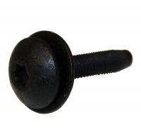
2003 - 2010 Dodge Viper SRT10 Battery Cover Torx Bolt - 06508183AA
Part # 6508183AA
$14.95
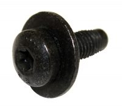
2003 - 2010 Dodge Viper SRT10 Belly Pan Head Screw - 06505070AA
Part # 6505070AA 53138114
$11.75
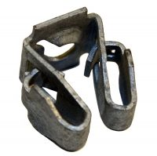
2003 - 2010 Dodge Viper SRT10 M4.8 x1.6 Snap In Nut - 06507528AA
$1.50
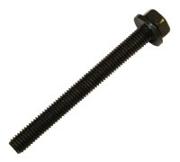
2003 - 2010 Dodge Viper SRT10 M8 x 1.25 x 80.00 Dash Bolt - 06101326
Part # 06101326
$1.00
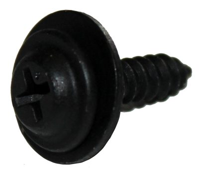
2003 - 2010 Dodge Viper SRT10 Side Sill Belly Pan Phillips Screw & Washer - 06035625
Part # 6035625
$16.95

2003 - 2010 Dodge Viper SRT10 TPMS Nut - 52088961AA
Part # 52088961AA
$4.00

2003 - 2010 Dodge Viper SRT10 U-Nut Four Pack- 00152493
Part # 00152493
$5.50
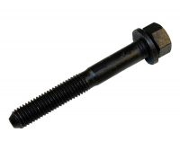
2003 - 2010 Dodge Viper SRT10 Upper Control Arm Mounting Bolt - 06502046
Part # 06502046
$3.00
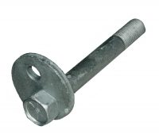
2003 - 2013 Dodge SRT Viper Control Arm Cam Bolt - 6036525AA
Part # 6036525AA
$50.00
 Out of stock
Out of stock2003 - 2013 Dodge SRT Viper Exhaust Manifold Clamp - 05290111AB
Part # 5290111AB
$30.00
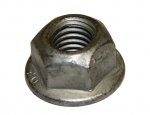
2003 - 2013 Dodge SRT Viper Hex Flange Nut - 06104716AA
Part # 06104716AA
$1.00
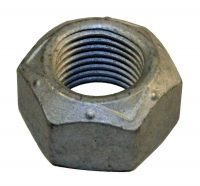
2003 - 2013 Dodge SRT Viper Lower Control Arm .50-20 Hex Lock Nut - 06036467AA
$4.00
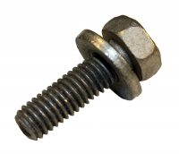
2003 - 2013 Dodge SRT Viper M6x1.00x20.00 Hex Head Bolt - 06101826
$2.00
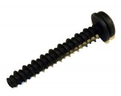
2003 - 2013 Dodge SRT Viper Tapping Pan Head Screw & Washer - 06035434
$1.00
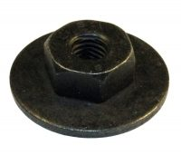
2003 - 2013 Dodge SRT Viper Wiper Assembly M6 x 1.00 Hex Nut Coned Washer - 06503664
$1.00

2003 - 2016 Dodge Viper SRT10 Push Pin - 06504521
Part # 6504521
$9.30
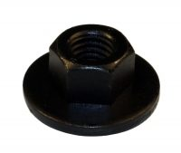
2004 - 2009 Dodge Viper SRT10 Pedal Assembly Nut - 06101446
$1.50

2004-2006 Dodge Viper Crankshaft Bolt - 6036207AA
$18.00
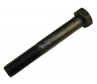
2005 - 2013 Dodge SRT Viper Hex Head Axle Bolt - 06102404AA
$4.00
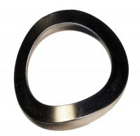
2005 - 2013 Dodge SRT Viper Hub Wave Washer - 05212684
$2.00

2005 - 2013 Dodge SRT ViperBrake Line Clamp - 05039000AA
Part # 05039000AA
$2.20

2006 - 2010 Dodge Viper SRT10 Console Shift Ring Hex Socket Screw - 5093298AA
Part # 5093298AA / 6036430AA
$8.49

2006 - 2010 Dodge Viper SRT10 Coupe Fuel Door Hex Socket Screw - 06508699AA
Part # 6508699AA
$6.75
 Out of stock
Out of stock2008 - 2010 Dodge Viper ACR Shock Adjustment Tool - 5181441AA
Part # 5181441AA
$38.00
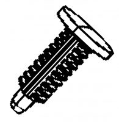
2008 - 2010 Dodge Viper SRT10 Hood Air Deflector Push Pin - 06505417AA
Part # 06505417AA
$1.50
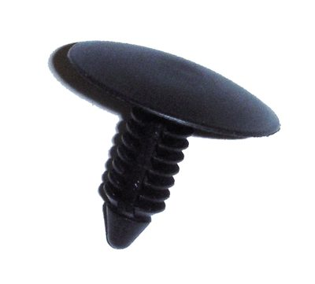
2008 - 2010 Dodge Viper SRT10 Hood Pad Pin - 06506293AA
Part # 06506293AA
$5.00
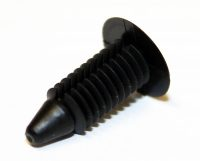
2008 - 2010 Dodge Viper SRT10 Hood Screen Push Pin KIT ( 42 ) - 04658673
$142.00

2008 - 2010 Dodge Viper SRT10 Hood Screen Push Pins - 04658673
Part # 4658673
$3.50
 Out of stock
Out of stock2013-2015 Dodge Viper Exhaust Shoulder Bolt .312-18x2.00 - 6036432AA
Part # 6036432AA
$7.95

1992-2002 Viper GTS RT10 Fuel Access Close Out Panel Mopar Part 4848582AB
Part # 4848582AB
$600.00
2000 - 2010 Dodge Viper Fender to Sill Reinforcement Screw - 06507167AA
Part # 06507167AA
$9.50
Out of stock2003 - 2014 Dodge SRT Viper Bumper Reinforcement - 05029208AA
Part # 05029208AA
$11.00
Out of stock2003-2017 Dodge Viper Brake Pad Pin Set 05093302AA
Part # 05093302AA
$18.00
97-02 Dodge Viper RT/10 Hardware Cover for Convertable 04848902AA
Part # 04848902AA
$7.75